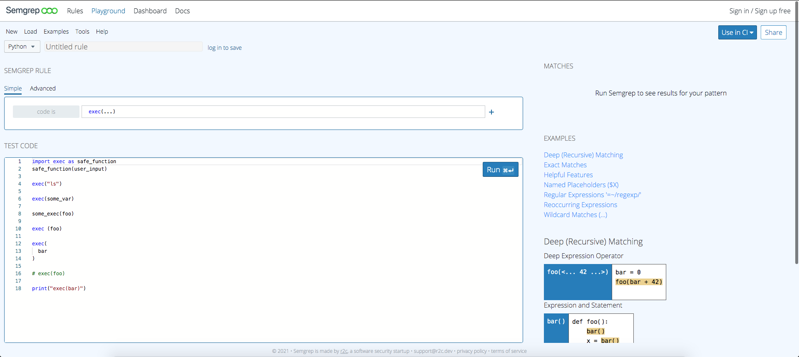
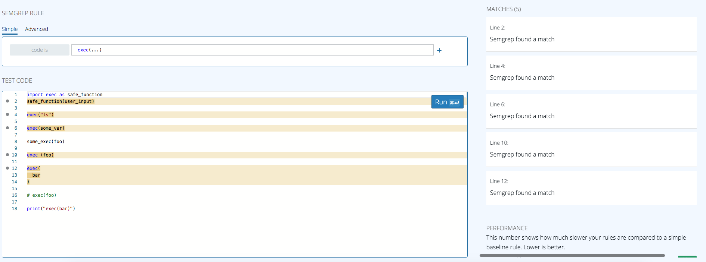
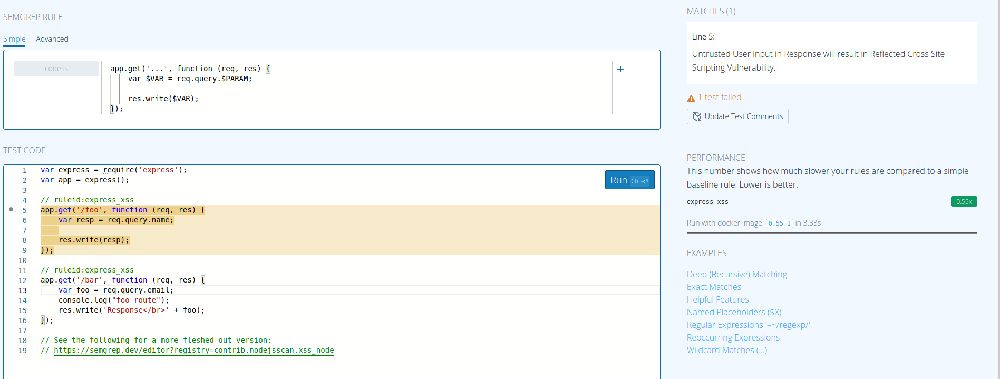
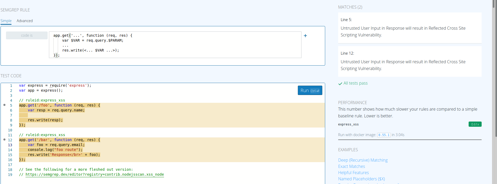
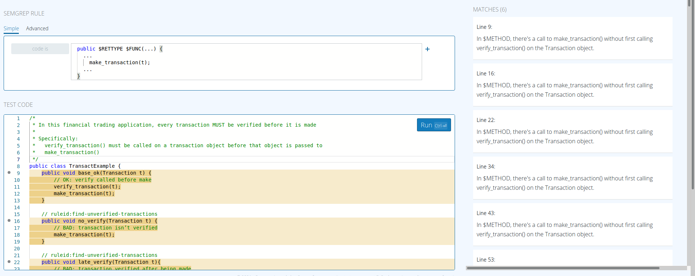
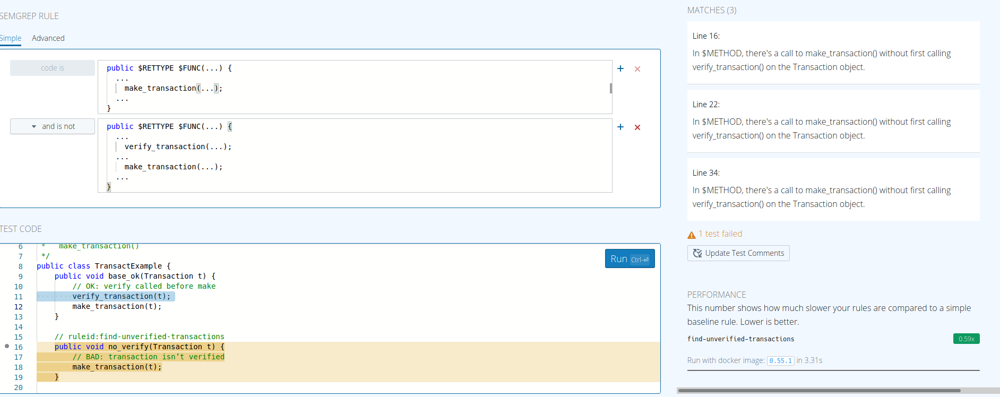
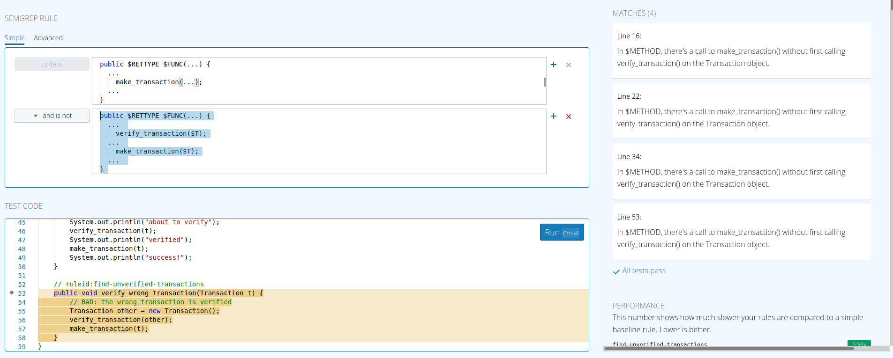
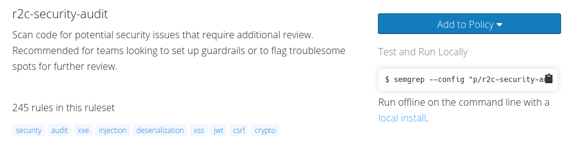

The goal of this post is to give an introduction into how to create rules using Semgrep as well as getting a broad overview of what the tool is. The structure here will be to first explore the tool, then go into examples on how to use it with the User Interface(UI) to understand the logic, then finally go into how to actually code the rules on a more complex level.
Table of Contents
- What is Semgrep
- Semgrep Basics
- Introductory Examples
- Coding Rules in Semgrep
- Running Semgrep in the Commandline
- Advanced Semgrep
What is Semgrep
“Semgrep is a customizable, lightweight, static analysis tool for finding bugs/enforcing code standards designed for security consultants and hackers”
It is useful because:
- It is open source (free)
- Supports many languages (go, python, java, javascript, php, and more)
- There are about 1000 predefined rules you can use “out of the box”
- Does NOT require buildable source code
- There is no Domain Specific Language (DSL) to learn, you can make custom patterns to match the code you are targeting
- Easy to use for any developer, does not require expertise
Assumptions Made by the Developers
- Speed is important, scans should be completed in minutes, not hours/days
- It’s better to have false negatives than false positives
- Ease of use is important
- Prioritize first time users (as they are the average user)
- Should be accessible to developers, not just security professionals
- Enforcing security standards is MORE important than finding every bug
Design Decisions
- Focuses on single file/localized analysis
- Better for speed and enforcing security protocols
- Has rules that look like source code
- Makes it easier for first time users
Other Features
- Compatible with Regex
- Confirming proper access given to files
- Map out application routes
- Check for weak RSA keys
- Check for calls on runtime objects
- Match JSON
- “Generic” mode to analyze code in languages not directly supported or any text
- Autofix/suggest option to correct common mistakes
- Software as a Service (SaaS) option when used on large scale (not open source)
- Can interact with GitHub, Jira, Slack, and more
The Basics
There are two operators that add functionality to Semgrep on top of whatever programming language you choose to use:
- Ellipsis
...- the ellipsis operator is a filler for an unknown space with zero or more arguments regardless of what they are - Metavariables
$VARIABLE- these are like capture groups, a fill in for a unknown variable you want to match prior to its a assignment of a value
To get a good introduction on these two operators, check out this site for a tutorial into Semgrep
Basic Examples
To test some of the functionalities of Semgrep, visit this site to play with the Semgrep Playground and follow along with the demos below:
Taking a look at the image below we can see the Semgrep Playground User Interface. The basic layout will have the top left dropdown allowing you to choose your language, the Rule Bar to enter your rule, the Test Code block to see the code that the rule will be tested on and any results from the query will show up on the right hand side 
Identifying a Function Call
Click Here to follow along with this example:
exec(...)will find all instances of the functionexec()in your code. But it is smart, as you can see in the image below, the query will IGNORE comments and string literals while also IDENTIFYING the function even with varying syntax and aliases of the function call likesafe_function
Cross Site Scripting (XSS)
Following this example, we can see the code is vulnerable to a XSS attack as the user inputted query is not being filtered for any potentially malicious input.
- The benefit of Semgrep is we can search for whatever we want in out chosen language. So to start making a rule, we can just copy the source code and then begin to abstract it
- Let’s replace
/foowith..., as we want to search for anytime a general string is used regardless of its value - We can add an
$in front of an all caps name to represent a Metavariable. In this case, we can replacenameinreq.query.namewith$PARAMto represent an unknown parameter- Similarly we can replace the variable
respwith$VARto represent an unknown variable being passed
- Similarly we can replace the variable
- This brings us to the rule of:
Which we can see, correctly identifies one of our XSS vulnerabilities, but not both
app.get('...', function (req, res) { var $VAR = req.query.$PARAM; res.write($VAR); });

- We can see that the main differences between the two are the extra lines of code, and the extra arguments in functions. To take care of that, we can add some strategic ellipsis and arrows:
- What these arrow brackets are doing is saying that we know our Metavariable exists somewhere in the expression, but we don’t know exactly where it is
app.get('...', function (req, res) {
var $VAR = req.query.$PARAM;
...
res.write(<... $VAR ...>);
});

Business Logic
Business Logic is when the code itself seems fine, but how the code works is fundamentally wrong (such as the order in which methods are called). Lets take a look at this example
- Sometimes we have a need for conditionals in our rules, for example if we want to check for the order of, or presence of certain items. To start off, lets copy the first method (lines 9-13)
- We don’t care about the return type, so lets replace
voidwith$RETTYPEas our Metavariable - The function type and arguments don’t matter either so we can replace
base_okwith$FUNCandTransaction twith... - The main thing we are looking at here is the
make_transaction()function, so we can add ellipsis above and below that statement as well as replacing the function’s argument leaving us with this:If we run that, we get this result which locates everything that use thepublic $RETTYPE $FUNC(...) { ... make_transaction(...); ... }make_transaction()function  - This is good but doesn’t actually check if they business logic is right, we need to add a conditional by clicking the plus button to the right of the rule block
- We can see a dropdown of options, here we want and is not, and then copy the top rule into the bottom box
- Above the
make_transaction()line in our new rule section, lets add an ellipsis followed byverify_transaction(...);. What this does is make sure the verify function is never called prior to the make transaction function in any place the make transaction function exists, as we only want the transaction to be verified if it first has been madeWhen we run, we can see that it works and returns every time the verify transaction function is called before the make transaction function, with one exception public $RETTYPE $FUNC(...) { ... verify_transaction(...); ... make_transaction(...); ... } - In the very last method of the sample code, we see that it should be flagged as a vulnerability as the transaction that is verified is not the same one that is made
- To fix this, we can replace the function ellipses in the and is not rule with a Metavariable
$T
public $RETTYPE $FUNC(...) {
...
verify_transaction($T);
...
make_transaction($T);
...
}
And when we run this version we see it is able to catch all of the exceptions: 
Coding in YAML
What we were looking at before is the Semgrep UI, but as we make more complex rules it is easier to do so using Semgrep’s natural syntax language, YAML You can read up on the specifics of YAML here, but the main outline of a Semgrep command is as follows:
rules:
- id: name-of-rule
patterns:
- pattern: $PATTERN_A
message: |
Write your message here
languages: [languageName]
severity: SEVERITYLEVEL
To break this down:
id- the name of the rule, this should be alphanumeric with dashes replacing spacespatterns- this is where your specific rules are, more information below but make sure to have proper syntaxmessage- this is the message that will be displayed when something is flagged. Often it is meant to help developers by providing context to what needs to be changed- Note the pipeline (
|) in YAML is used to have multiple lines be compiled into single lines
- Note the pipeline (
language- a place where you can put the language that this rule applies toseverity- what kind of issue this code is, it can be eitherINFO,WARNING, orERROR
Coded Patterns
There are five main pattern commands that can be used in combination with one another. They are very similar to boolean expressions. Here is a brief description of each one followed by an example:
pattern= search for “this” AND “that”
rules:
- id: default-pattern-example
patterns:
- pattern: print(...)
This rule will search for any instance of the print() function being called, regardless of its arguments
pattern-either= search for “this” OR “that”
rules:
- id: either-pattern-example
patterns:
- pattern-either:
- pattern: if(...)...
- pattern: print(...)
This rule will return any instances of an if() statement call OR a print() statement call
pattern-not= filters out patterns you do not want to match, ie. matches “this” AND NOT “that”
rules:
- id: not-pattern-example
patterns:
- pattern: if (...)...
- pattern-not: if ("..." == $VAR)...
This rule finds all instances of an if statement, but will filter out any instance where the first value is a string literal being compared to some other value
pattern-inside= allows you to search for patterns inside the pattern specified bypattern-inside. This means this command must be FIRST, and the following patterns will only search based on the set received from this command call
rules:
- id: inside-pattern-example
patterns:
- pattern-inside: |
func $FUNC(..., $VAR, ...) {
...
}
- pattern: print($VAR)
This rule will first narrow down its search to only functions that have at least one argument, and in those search for an instance of a print() statement that uses the same function argument
pattern-not-inside= filters out any matches inside the range defined by the pattern. This means this command can only come AFTER a previously defined pattern
rules:
- id: not-inside-pattern-example
patterns:
- pattern: print(...)
- pattern-not-inside: |
if (...) ...
...
This rule will find all instances of print(), but then narrow down those results to only print() calls that occur BEFORE an if() statement
Running Locally
Installing
- Run
brew install semgrepto install semgrep locally on a Mac (you must have Homebrew already installed)- For more details on installation on both Macs and other devices, look here
Environment
As Semgrep is now installed locally, you will be able to use semgrep as a command. Make sure that before running the command, your YAML rule file is in your current directory, which should be in the same directory that contains the directory/file you want to test. The general format is as follows:
semgrep --config ruleFile.yml --timeout 0 /directoryToTest
--config ruleFile.yml- this tells Semgrep which YAML rule file you want to use in your test--timeout 0- while this flag is technically optional, what it is doing is giving the time in seconds for how long Semgrep will wait for a single rule to run before it times out. When set to 0, it will never timeout, without the flag, the default is set to 30 seconds/directoryToTest- this is the directory (or file) that you wish to run your rule(s) against
Shared Rulesets
While we know we have the ability to create our own rules, Semgrep has over 1000 pre-existing rules that have been vetted by the company for precision. Accessing these rulesets is pretty simple:
- Find the ruleset you want to use on the Semgrep explore page
- Each ruleset will list all of it’s rules along with examples of how they work if you wish to explore them more in depth
- Once you’ve selected your ruleset, in the top right corner there will be a section titled “Test and Run Locally” with a command you can copy as seen below 
- With this command copied, we can add our
timeout 0 /directoryToTestto the end and the ruleset will be run against the selected directory- Example:
semgrep --config "p/r2c-security-audit" --timeout 0 /directoryToTest- this will run the r2c-security-audit ruleset on whatever directory you indicate
- Example:
Advanced
While the instructions above will be able to guide you through ~80% of what you’ll need to know for Semgrep, there are several other useful rule syntaxes that are good to know. I will provide a basic description of each of them followed by an example showing how to use it. For a more in-depth explanation of each rule, check out the documentation
Regex Patterns
The five patterns we looked at before were all based on bitwise operators of the code. The following patterns are all based on bitwise operators of the regular expressions that can be found in the code, allowing for more specificity. While there are many different types of Regex syntax, Semgrep uses Perl Compatible Regular Expressions(PCRE):
pattern-regex= searches for a compatible regular expression (works best for Python)
rules:
- id: regex-pattern-example
patterns:
- pattern-inside: print(...)
- pattern-regex: \d
This rule will find all instances of print(), but then narrow down those results to only print() calls that include a decimal number in them
pattern-not-regex= will filter out compatible regular expressions (works best for Python)
rules:
- id: not-regex-pattern-example
patterns:
- pattern-inside: print(...)
- pattern-not-regex: \d
This rule will find all instances of print(), but then narrow down those results to only print() calls that DO NOT include a decimal number in them
Metavariable Rules
metavariable-regex= this works similar topattern-regex, but instead of matching any instance of the regex in the code, this will only match regex patterns found in a given Metavariable
rules:
- id: metavariable-regex-example
patterns:
- pattern: print($VAR)
- metavariable-regex:
metavariable: $VAR
regex: (hello|hi|welcome)
To break this down:
pattern- like we defined above, can be any of the patterns/combination of that we’ve learnedmetavariable-regex- we type this to let YAML know we are about to provide a regex rulemetavariable- this is where you specify which of your previously defined Metavariables you are going to be writing your regex rule forregex- this is where you specify what expressions you want to match to the Metavariable you picked. In this case you would only be returning instances where $VAR includes “hello”, “hi”, OR “welcome” insideprint()statements
metavariable-pattern= this rule works the same way asmetavariable-regexbut instead of searching for matching regular expressions, it searches for matching patterns using the five pattern rules from above
rules:
- id: metavariable-pattern-example
patterns:
- pattern: |
if(<... $VAR ...>) {
$CALL
}
- metavariable-pattern:
metavariable: $CALL
pattern: print($VAR)
This rule will search for all if() statements where the Metavariable $VAR is used, then it will check what is being executed in the if() statement with the $CALL Metavariable and will return any instance where $CALL is print($VAR)
metavariable-comparison= this rule will take a provided Metavariable and use a Python comparison function to evaluate the Metavariable’s numeric value
rules:
- id: metavariable-comparison-example
patterns:
- pattern: set_value($VAR)
- metavariable-pattern:
comparison: $VAR < 900
metavariable: $VAR
This rule will search for all calls of the set_value() function where the variable passed in is less than 900. This can be useful if a value must be greater/less than a certain number to avoid issues


Please share using the links if you enjoyed!